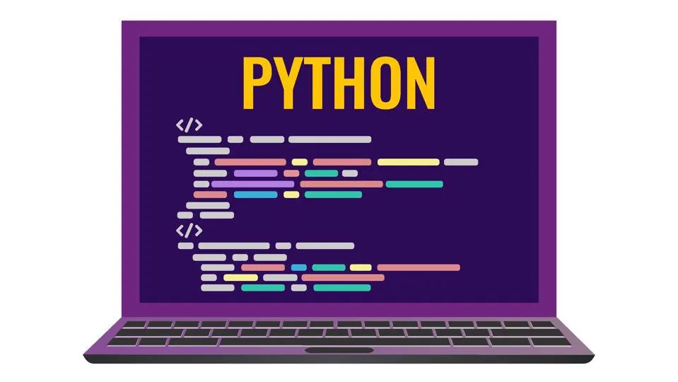
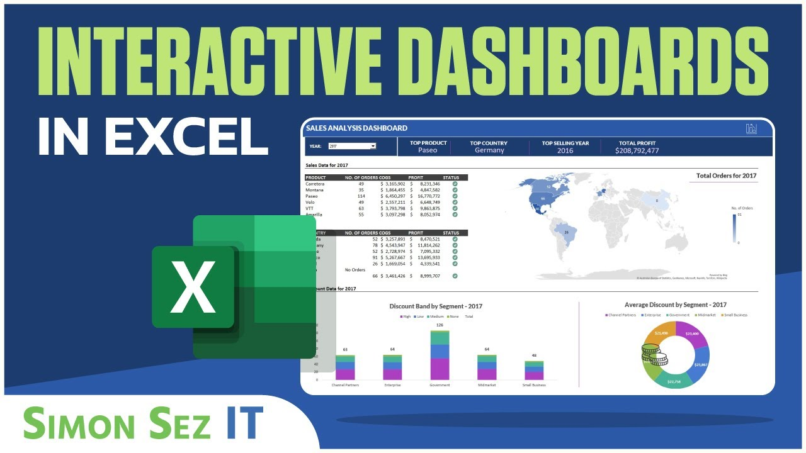

In this project I used Python to explore and visualize the data. It focuses on identifying top-paying and in-demand skills, enabling the discovery of optimal job opportunities
Packages used:Pandas,matplotlib,seaborn
In this project, I used the following excel functions: Vlookup(),xlookup(),index+match,filter(),sumifs(),
countifs(),averageifs().

In this project I used SQL Server to explore global COVID 19 data.

In this project I took raw housing data and transform it in SQL Server to make it more usable for analysis.

In this project,I created two sale's dashboards using excel.
In this project,I used Power BI to analyze and create the dashboard.
In this project I scrape sumsung smartphones features and their respective prices from Jumia website using rvest and tidyverse package in R.
Click hereto visit the website.

In this project, I used R to create both simple and multiple linear regression model.